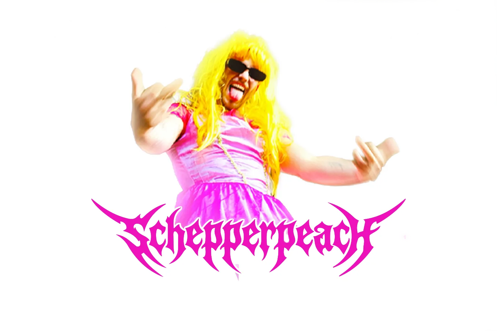

Schepperpeach — Sticker-Design
Sticker-Design für Schepperpeach.

Ähnliches Projekt geplant? Anfrage schreiben oder Leistungen ansehen.
Sticker-Design für Schepperpeach.

Ähnliches Projekt geplant? Anfrage schreiben oder Leistungen ansehen.